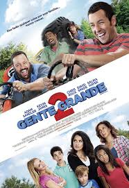
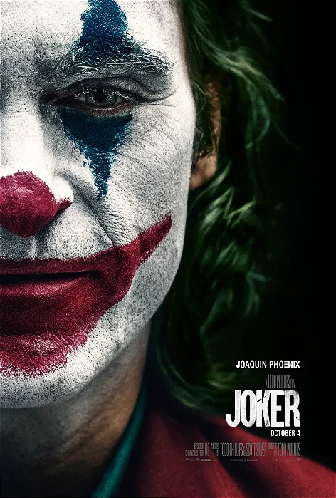

Aqui você encontra uma seleção dos melhores filmes de todos os tempos. Aproveite para conhecer e explorar os títulos que marcaram gerações, com suas histórias envolventes e atuações memoráveis.
| Filme | Imagem | Sinopse |
|---|---|---|
| Gente Grande |  | A morte do treinador de basquete de infância de velhos amigos reúne a turma no mesmo lugar que celebraram um campeonato anos atrás. Os amigos, acompanhados de suas esposas e filhos, descobrem que idade não significa o mesmo que maturidade. |
| A Orfã | |
Uma série de eventos alarmantes faz com que uma mulher acredite que algum mal esteja por trás do rosto angelical da filha de nove anos, recentemente adotada |
| Moana | Uma jovem parte em uma missão para salvar seu povo. Durante a jornada, Moana conhece o outrora poderoso semideus Maui, que a guia em sua busca para se tornar uma mestre em encontrar caminhos. Juntos, eles navegam pelo oceano em uma viagem incrível. | |
| Frozen | |
Acompanhada por um vendedor de gelo, a jovem e destemida princesa Anna parte em uma jornada por perigosas montanhas de gelo na esperança de encontrar sua irmã, a rainha Elsa, e acabar com a terrível maldição de inverno eterno, que está provocando o congelamento do reino. |
| Enrolados | |
O bandido mais procurado do reino, Flynn Rider, se esconde em uma torre e acaba prisioneiro de Rapunzel, residente de longa data do local. Dona de cabelos dourados e mágicos com 21 metros de comprimento, ela está trancada há anos e deseja desesperadamente a liberdade. A adolescente determinada faz um acordo com o rapaz, e, juntos, partem para uma aventura emocionante. |
| Coringa |  | Isolado, intimidado e desconsiderado pela sociedade, o fracassado comediante Arthur Fleck inicia seu caminho como uma mente criminosa após assassinar três homens em pleno metrô. Sua ação inicia um movimento popular contra a elite de Gotham City, da qual Thomas Wayne é seu maior representante. |
| Avatar | No exuberante mundo alienígena de Pandora vivem os Na'vi, seres que parecem ser primitivos, mas são altamente evoluídos. Como o ambiente do planeta é tóxico, foram criados os avatares, corpos biológicos controlados pela mente humana que se movimentam livremente em Pandora. Jake Sully, um ex-fuzileiro naval paralítico, volta a andar através de um avatar e se apaixona por uma Na'vi. Esta paixão leva Jake a lutar pela sobrevivência de Pandora. | |
| Batman | |
No exuberante mundo alienígena de Pandora vivem os Na'vi, seres que parecem ser primitivos, mas são altamente evoluídos. Como o ambiente do planeta é tóxico, foram criados os avatares, corpos biológicos controlados pela mente humana que se movimentam livremente em Pandora. Jake Sully, um ex-fuzileiro naval paralítico, volta a andar através de um avatar e se apaixona por uma Na'vi. Esta paixão leva Jake a lutar pela sobrevivência de Pandora. |
| Deadpool | |
Wade Wilson é um ex-agente especial que passou a trabalhar como mercenário. Seu mundo é destruído quando um cientista maligno o tortura e o desfigura completamente. O experimento brutal transforma Wade em Deadpool, que ganha poderes especiais de cura e uma força aprimorada. Com a ajuda de aliados poderosos e um senso de humor mais desbocado e cínico do que nunca, o irreverente anti-herói usa habilidades e métodos violentos para se vingar do homem que quase acabou com a sua vida. |
| Venom | |
O jornalista investigativo Eddie Brock é possuído por uma forma alienígena simbionte, ganhando poderes-sobre humanos. Perverso, sombrio e alimentado pela raiva, Venom tenta controlar os novos e perigosos poderes inebriantes de Eddie. |
| Velozes-Furiosos | |
Brian O'Conner é um policial que se infiltra no submundo dos rachas de rua para investigar uma série de furtos. Enquanto tenta ganhar o respeito e a confiança do líder Dom Toretto, ele corre o risco de ser desmascarado. |
| Homem-Aranha | |
Depois de ser picado por uma aranha geneticamente modificada em uma demonstração científica, o jovem nerd Peter Parker ganha superpoderes. Inicialmente, ele pretende usá-los para para ganhar dinheiro, adotando o nome de Homem-Aranha e se apresentando em lutas de exibição. Porém, ao presenciar o assassinando de seu tio Ben e sentir-se culpado, Peter decide não mais usar seus poderes para proveito próprio e sim para enfrentar o mal, tendo como seu primeiro grande desafio o psicótico Duende Verde. |
| Vingadores | |
Loki, o irmão de Thor, ganha acesso ao poder ilimitado do cubo cósmico ao roubá-lo de dentro das instalações da S.H.I.E.L.D. Nick Fury, o diretor desta agência internacional que mantém a paz, logo reúne os únicos super-heróis que serão capazes de defender a Terra de ameaças sem precedentes. Homem de Ferro, Capitão América, Hulk, Thor, Viúva Negra e Gavião Arqueiro formam o time dos sonhos de Fury, mas eles precisam aprender a colocar os egos de lado e agir como um grupo em prol da humanidade. |
| As-Branquelas | |
Dois irmãos agentes do FBI, Marcus e Kevin Copeland, acidentalmente evitam que bandidos sejam presos em uma apreensão de drogas. Como castigo, eles são forçados a escoltar um par de socialites nos Hamptons. Quando as meninas descobrem o plano da agência, elas se recusam a ir. Sem opções, Marcus e Kevin, dois homens negros, decidem fingir que são as irmãs e se transformam em um par de loiras. |
| Bad-Boys | |
Em Miami, os detetives Mike Lowrey e Marcus Burnett trocam de identidade enquanto investigam assassinatos ligados ao roubo de uma carga de 100 milhões de dólares em heroína, que recentemente confiscaram. |
| Pânico | Um grupo de jovens enfrenta um assassino mascarado que testa seus conhecimentos sobre filmes de terror. A pequena cidade de Woodsboro nunca mais será a mesma. |